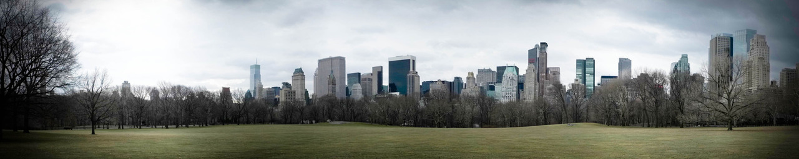
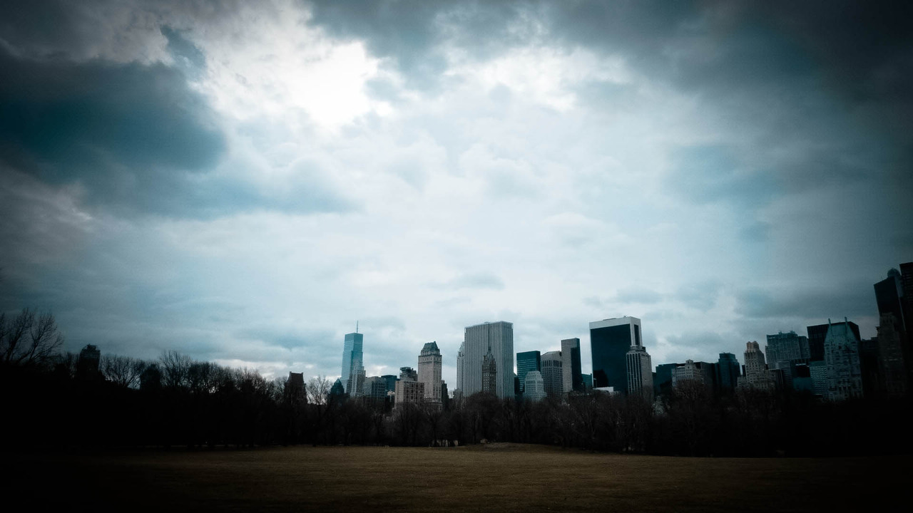
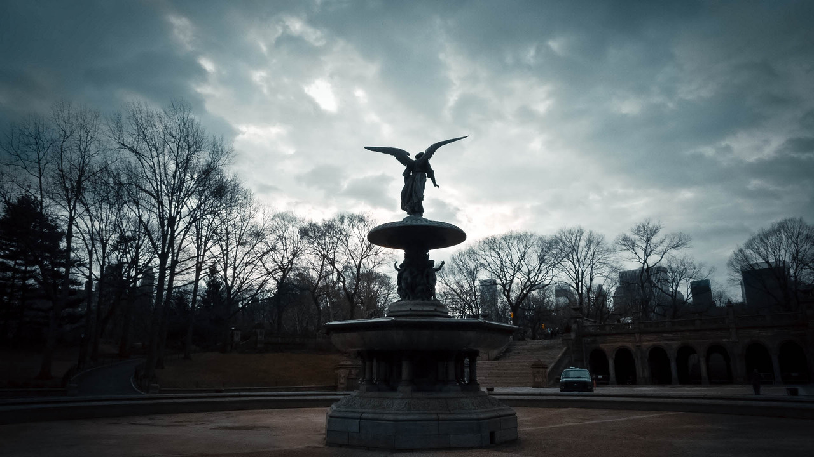
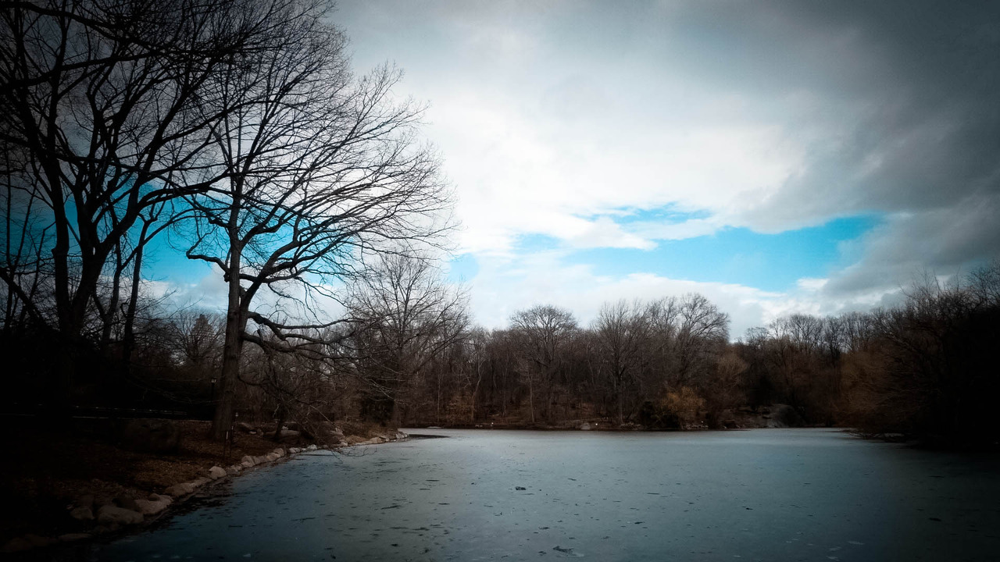
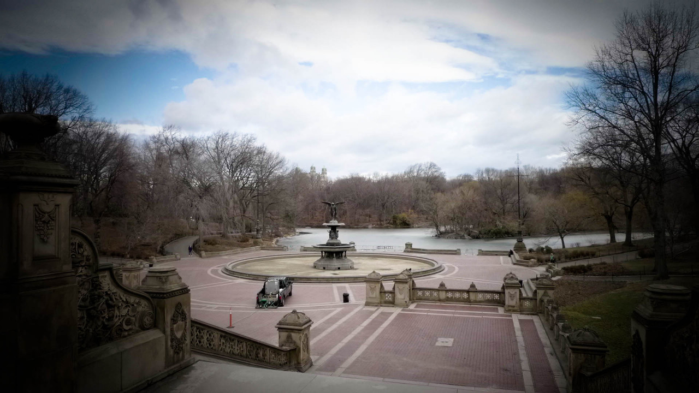
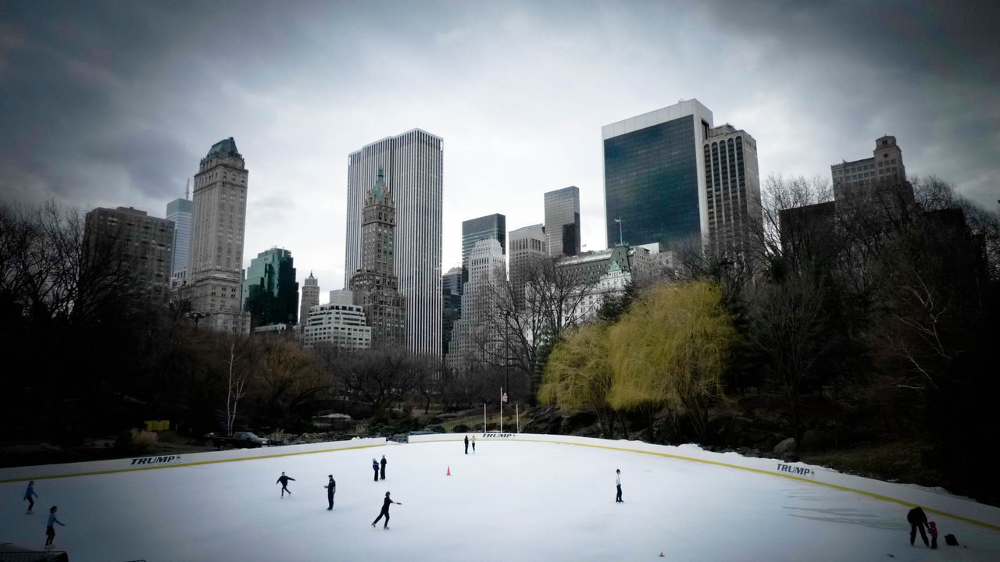
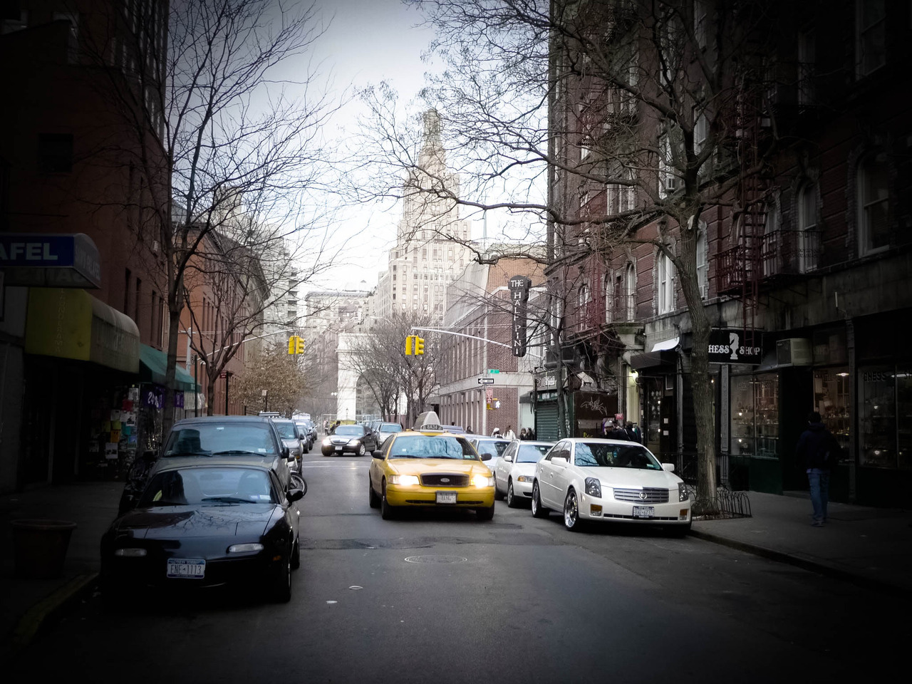
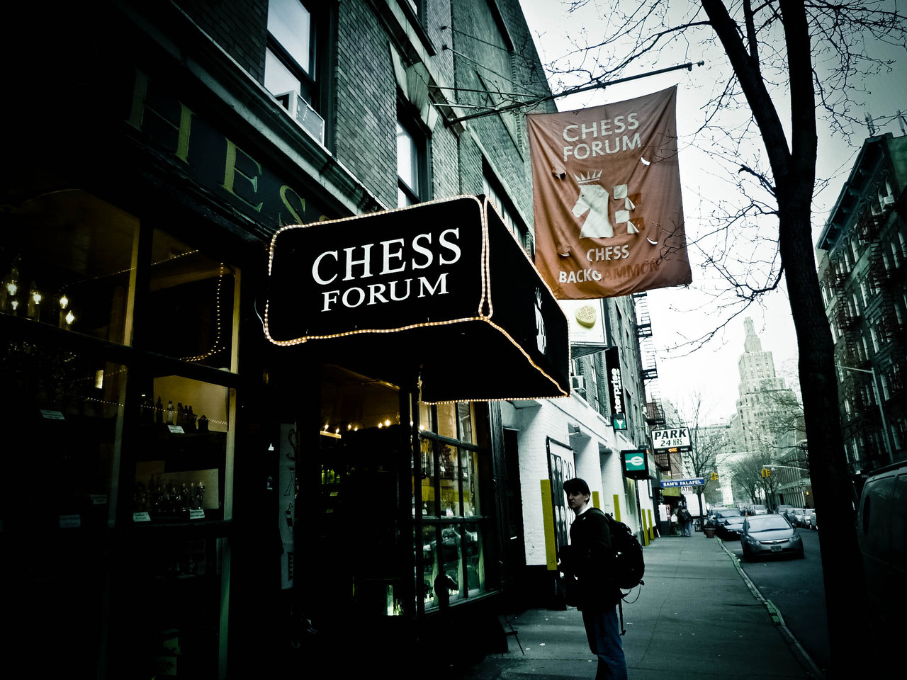

Fri, 20 Aug 2010 19:23:00 · NewYork · New York · Central Park · City
random shots of new york episode 2 of some








Random Shots of New York ~ episode 2 of…
Some more experiment of my New York trip collections. I like the eerie feels of Central Park where none about. It was a freezing -7ºC in the late afternoon, and apparently people preferred to huddle inside than bracing the frigid weather.